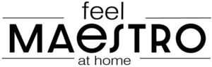

Trade Mark Journal No.2026/012 20 March 2026
WO0000001895296 (7,8,9,11,21)
Office of origin: Ukraine
Date of International Registration:7 October 2025
Date of designation in the UK:
7 October 2025

International priority date claimed: 25 August 2025
(Ukraine)
- Class 7
- 3D printers; 3D printing pens; apparatus for aerating beverages; screwdrivers, electric; wringing machines for laundry; whisks, electric, for household purposes; suction nozzles for vacuum cleaners; knitting machines; lawnmowers [machines]; kitchen grinders, electric; blenders, electric, for household purposes; stitching machines; hand-held tools, other than hand-operated; coffee grinders, other than hand-operated; compressors [machines]; food processors, electric; butter machines; sausage making machines; pasta making machines, electric; soy sauce making machines; food preparation machines, electromechanical; beverage preparation machines, electromechanical; peeling machines; dairy machines; hemming machines; crushing machines; grinding machines; machines for the textile industry; waste compacting machines; machines and apparatus for carpet shampooing, electric; machines and apparatus for polishing [electric]; machines and apparatus for cleaning, electric; electric kitchen machines; dishwashers; laundry washing machines incorporating a drying tumbler; ironing machines; high pressure washers; agitators; mills [machines]; pepper mills, other than hand-operated; mills for household purposes, other than hand-operated; meat choppers, electric; vacuum cleaner attachments for disseminating perfumes and disinfectants; scissors, electric; knives, electric; tin openers, electric; vegetable spiralizers, electric; vegetable slicers, electric; vegetable peelers, electric; dust removing installations for cleaning purposes; dust exhausting installations for cleaning purposes; vacuum cleaners; touchless stationary vacuums; electric glue guns; crushers for kitchen use, electric; washing machines [laundry]; smoothing presses; fruit presses, electric, for household purposes; parquet wax-polishers, electric; cleaning appliances utilizing steam; portable ultrasonic washing devices for laundry; sifting installations; spinning machines; household cleaning and laundry robots with artificial intelligence; cheese slicers, electric; juice extractors, electric; spin dryers [not heated]; grating machines for vegetables; kneading machines; vacuum cleaner bags; waste disposal units; bread cutting machines; steam mops; sewing machines; vacuum cleaner hoses; darning machines; brushes for vacuum cleaners; machine tools for cutting; cutting torches, gas-operated; quarrying equipment.
- Class 8
- Laser hair removal apparatus, other than for medical purposes; razors, electric or non-electric; table forks; carving forks; screwdrivers, non-electric; cutlery; implements for decanting liquids [hand tools]; hand implements for hair curling; scraping tools [hand tools]; oyster openers; fingernail polishers, electric or non-electric; belly button piercing instruments; sharpening wheels for knives and blades; food processors, hand-operated; nail clippers, electric or non-electric; spoons; manicure sets; manicure sets, electric; beard clippers; hair clippers for animals [hand instruments]; hair clippers for personal use, electric and non-electric; pedicure sets; emery boards; shaving cases; scissors; multi-tool knives; vegetable knives; pizza cutters, non-electric; mincing knives; paring knives; box cutters; ceramic knives; tin openers, non-electric; hunting knives; cleavers; penknives; knives; table knives, forks and spoons for babies; table knives, forks and spoons of plastic; carving knives; vegetable choppers; vegetable spiralizers, hand-operated; vegetable slicers, hand-operated; vegetable peelers, hand-operated; nail files; nail files, electric; hair-removing tweezers; tweezers; guns [hand tools]; guns, hand-operated, for the extrusion of mastics; hand tools, hand-operated; irons [non-electric hand tools]; crimping irons; hair straightening irons; clothes irons; table cutlery [knives, forks and spoons]; depilation appliances, electric and non-electric; fruit corers; fruit segmenters; pin punches; cheese slicers, non-electric; scrapers [hand tools]; silver plate [knives, forks and spoons]; mortars for pounding [hand tools]; rammers [hand tools]; hand-operated fruit slicers; razor cases; ladles [hand tools]; kitchen mandolines; cuticle tweezers; curling tongs; nail nippers; eyelash curlers; pincers; egg slicers, non-electric.
- Class 9
- 3D spectacles; 3D scanners; aerials; sound recording apparatus; sound transmitting apparatus; audiovisual teaching apparatus; telephone apparatus; photocopiers [photographic, electrostatic, thermic]; testing apparatus not for medical purposes; teaching apparatus; anti-theft warning apparatus; audio- and video-receivers; audio interfaces; cordless telephones; computer memory devices; smart bracelets; LAN [local area network] computer cards for connecting portable computer devices to computer networks; electronic key fobs being remote control apparatus; scales; baby scales; scales with body mass analysers; bathroom scales; electronic publications, downloadable; electric plugs; measuring devices, electric; motorcyclists' clothing for protection against accident or injury; wearable video display monitors; video screens; camcorders; video recordings; video mixing desks; video baby monitors; video telephones; headsets; virtual reality headsets; headsets for playing video games; hands-free kits for telephones; measuring glassware; electric door bells; alarm bells; mirrors [optics]; dictating machines; head-mounted displays; electronic interactive whiteboards; electronic pocket translators; electronic collars to train animals; electronic agendas; computer software applications, downloadable; pocket calculators; mouse pads; dashboard mats adapted for holding mobile telephones and smartphones; ring stands for mobile telephones; ring stands for cell phones; ring holders for mobile telephones; cell phone ring holders; portable speakers; computers; thin client computers; computer hardware; optical lanterns; signal lanterns; magnets; mouse [computer peripheral]; wireless speaker microphones; measuring spoons; mobile telephones; monitors [computer hardware]; headphones; notebook computers; spectacles; sunglasses; selfie sticks [hand-held monopods]; cooling pads for laptop computers; wrist rests for use with computers; tablet computers; DVD players; food analysis apparatus; electronic book readers; battery chargers; chargers for mobile telephones; portable power chargers; baby monitors; frames for photographic transparencies; light-emitting electronic pointers; scanners for data processing; smartwatches; smart speakers; television apparatus; USB flash drives; spectacle cases; cameras [photography]; cases for smartphones; cases for smartphones incorporating a keyboard; digital photo frames; covers for tablet computers; covers for smartphones.
- Class 11
- Autoclaves, electric, for cooking; hot air apparatus; deodorizing apparatus, not for personal use; apparatus for making ices and ice cream, electric; disinfectant apparatus; air deodorizing apparatus; apparatus for dehydrating food waste; ionization apparatus for the treatment of air or water; beverage cooling apparatus; air cooling apparatus; oil-scrubbing apparatus; desiccating apparatus; coffee roasters; hand drying apparatus for washrooms; water filtering apparatus; swimming pool chlorinating apparatus; roasting apparatus; heating and cooling apparatus for dispensing hot and cold beverages; water purifying apparatus and machines; air purifying apparatus and machines; refrigerating apparatus and machines; ventilation [air-conditioning] installations and apparatus; water softening apparatus and installations; sanitary apparatus and installations; drying apparatus and installations; heating apparatus, electric; heating apparatus for solid, liquid or gaseous fuels; light-emitting diodes [LED] lighting apparatus; full-body drying apparatus; lighting apparatus and installations; underfloor heating apparatus and installations; cooking apparatus and installations; hydromassage bath apparatus; barbecues; bidets; laundry room boilers; bath tubs; electric cooktops; waffle irons, electric; electric fans for personal use; evaporators; extractor hoods for kitchens; fabric steamers; refrigerating containers; pressure water tanks; water heaters; water supply installations; water flushing installations; hydrants; fairy lights for festive decoration; cooking pots, electric; hot pots, electric; rotisseries; hot water bottles; footwarmers, electric or non-electric; bed warmers; food dehydrators, electric; stills; beverage urns, electric; roasters; immersion heaters; electric appliances for making yogurt; shower cubicles; coffeepots, electric; coffee machines, electric; coffee capsules, empty, for electric coffee machines; lava rocks for use in barbecue grills; refrigerating chambers; fireplaces, domestic; electrically heated carpets; glue pots, electric; blankets, electric, not for medical purposes; smokers [cooking apparatus]; mixer taps for water pipes; taps; electrically heated mugs; cooking utensils, electric; cooking rings; kitchen ranges [ovens]; cooking stoves; lamps; nail lamps; lights, electric, for Christmas trees; head torches; chandeliers; ice-cream making machines; pounded rice cake making machines, electric, for household purposes; dish drying machines; ice machines and apparatus; coffee machines incorporating water purifiers; beer brewing machines, electric, for household purposes; microwave ovens [cooking apparatus]; freezers; multicookers; air fryers; footmuffs, electrically heated; hot plates; heaters for baths; heaters, electric, for feeding bottles; heaters for heating irons; air reheaters; stoves [heating apparatus]; hot air bath fittings; ozonizers for sanitizing purposes; heating installations; dehumidifiers; cool boxes, electric; purification installations for sewage; food steamers, electric; pasteurisers; coffee percolators, electric; bakers' ovens; plate warmers; tortilla presses, electric; heated display cabinets; refrigerating display cabinets; cooling appliances and installations; heated carving stations; sanitary and bathroom installations; chocolate fountains, electric; USB-powered hand warmers; air-conditioning apparatus; USB-powered cup heaters; refrigerating appliances and installations; anti-splash tap nozzles; kitchen sinks incorporating integrated worktops; ceiling lights; frying pans, electric; smart refrigerators; incinerators; tanning beds; solar thermal collectors [heating]; sterilizers; laundry dryers, electric; fruit roasters; air dryers; tajines, electric; heat pumps; bread toasters; air-conditioning installations; cooling installations for liquids; water purification installations; air filtering installations; cooling installations and machines; hair dryers; fountains; ornamental fountains; deep fryers, electric; bread baking machines; bread-making machines; refrigerators; kettles, electric; wine cellars, electric; refrigerating cabinets; socks, electrically heated.
- Class 21
- Autoclaves, non-electric, for cooking; wine aerators; deodorizing apparatus for personal use; polishing apparatus and machines, for household purposes, non-electric; cosmetic apparatus for microdermabrasion; perfume burners, electric and non-electric; cookie jars; saucers; demijohns; vases; fruit bowls; epergnes; inflatable bath tubs for babies; baby baths, portable; plungers for clearing blocked drains; waffle irons, non-electric; carpet beaters [hand instruments]; signboards of porcelain or glass; barbecue forks; serving forks; cookie [biscuit] cutters; pottery; ceramics for household purposes; tube squeezers for household purposes; ice buckets; buckets; automatic opening and closing trash cans for household purposes; mop wringer buckets; whisks, non-electric, for household purposes; towel rails and rings; containers for household or kitchen use; tea caddies; disposable aluminium foil containers for household purposes; portable cool boxes, non-electric; thermally insulated containers for food; cloth for washing floors; polishing cloths; dishcloths; cloths for cleaning; jugs; feeding troughs; pots; flower pots; cooking pots, non-electric; decanters; combs; abrasive gloves for scrubbing the skin; bath sponges; make-up sponges; sponges for household purposes; dripping pans; roaster pans; aromatic oil diffusers, other than reed diffusers, electric and non-electric; cutting boards for the kitchen; bread boards; washing boards; ironing boards; china ornaments; kitchen grinders, non-electric; beverage urns, non-electric; beaters, non-electric; blenders, non-electric, for household purposes; pasta makers, hand-operated; cleaning instruments, hand-operated; toothpicks; coffeepots, non-electric; coffee percolators, non-electric; coffee services [tableware]; coffee grinders, hand-operated; cauldrons; stew-pans; rolling pins, domestic; reusable silicone food covers; baking mats; boxes for sweets; boxes of glass; cosmetic utensils; cosmetic spatulas; dustbins for household purposes; bread baskets for household purposes; fitted picnic baskets, including dishes; baskets for household purposes; droppers for cosmetic purposes; droppers for household purposes; dish covers; crystal [glassware]; reusable ice cubes; decorative glass spheres; bulb basters; laundry balls, empty; dryer balls; tea infusers; mugs; cooking utensils, non-electric; kitchen utensils; kitchen containers; lunch boxes; insulated lunch bags; funnels; jam spoons; slotted spoons; ice cream scoops; mixing spoons [kitchen utensils]; basting spoons [cooking utensils]; serving spoons; spatulas for kitchen use; pie servers; valet trays [receptacles for small objects] for household purposes; majolica; butter dishes; noodle machines, hand-operated; lint removers, electric or non-electric; soap boxes; bowls [basins]; decorating bags for confectioners; cooking mesh bags; mills for household purposes, hand-operated; steel wool for cleaning; meat grinders, non-electric; liqueur sets; spice sets; cruet sets for oil and vinegar; heaters for feeding bottles, non-electric; toilet cases; floss for dental purposes; pill organizers for personal use; electronic pill organizers for personal use; cold packs for chilling food and beverages; bags for use in cooking; heating packs for preparing food and drinks; sticks for frozen confections; chopsticks; cocktail stirrers; food steamers, non-electric; basting brushes; make-up brushes; pepper pots; dusting apparatus, non-electric; candle warmers, electric and non-electric; cabarets [trays]; trays for household purposes; trays of paper, for household purposes; lazy susans; trivets [table utensils]; holders for flowers and plants [flower arranging]; cake stands; stands for clothes irons; grill supports; tea bag rests; egg cups; tablemats, not of paper or textile; place mats, not of paper or textile; wine-tasting pipettes; feather-dusters; plates for diffusing aromatic oil; plates to prevent milk boiling over; cruets; glass bulbs [receptacles]; bottles; drinking bottles for sports; crushers for kitchen use, non-electric; abrasive pads for kitchen purposes; scouring pads; watering cans; polishing materials for making shiny, except preparations, paper and stone; shaving brushes; dishes; porcelain ware; refrigerating bottles; drinking vessels; glass jars [carboys]; vessels for making ices and ice cream, non-electric; tortilla presses, non-electric [kitchen utensils]; fruit presses, non-electric, for household purposes; trouser presses; tie presses; pie funnels; mop wringers; bottle openers, electric and non-electric; egg poachers; clothing stretchers; drying racks for laundry; rotary washing lines; facial cleansing brushes, non-electric; apparatus for wax-polishing, non-electric; water apparatus for cleaning teeth and gums; watering devices; oven mitts; potholders; clothes-pegs; powder compacts, empty; perfume vaporizers; powder puffs; sifters [household utensils]; grills [cooking utensils]; shoe horns; pastry cutters; sprinklers; foam toe separators for use in pedicures; candle drip rings; shoe trees; kitchen utensils and containers; adhesive rollers for cleaning; gloves for potato peeling; gloves for household purposes; salad bowls; candelabra [candlesticks]; egg separators, non-electric, for household purposes; serving ladles; sieves [household utensils]; siphon bottles for carbonated water; salt cellars; coin banks; painted glassware; glass flasks [containers]; glasses [receptacles]; drinking glasses; frying pans, non-electric; squeegees [cleaning instruments]; currycombs; scoops for household purposes; dustpans; straws for drinking; tableware, other than knives, forks and spoons; mortars for kitchen use; soup tureens; dish drying racks; tajines, non-electric; basins [receptacles]; disposable table plates; paper plates; table plates; heat-insulated containers; heat-insulated containers for beverages; insulating flasks; zesters; graters for kitchen use; pestles for kitchen use; sponge holders; soap holders; paper towel holders; toilet paper holders; table napkin holders; tea cosies; figurines of porcelain, ceramic, earthenware, terra-cotta or glass; figurines of porcelain, ceramic, earthenware, terra-cotta or glass for cakes; flasks; hip flasks; moulds [kitchen utensils]; cake moulds; baking cases of paper; baking cases of silicone; ice cube moulds; cookery moulds; deep fryers, non-electric; bread bins; strainers for household purposes; tea strainers; sugar bowls; garlic presses [kitchen utensils]; teapots; kettles, non-electric; tea services [tableware]; cups; cups of paper or plastic; ironing board covers, shaped; cooking skewers of metal; mops; cocktail shakers; corkscrews, electric and non-electric; barbecue tongs; ice tongs; nutcrackers; salad tongs; sugar tongs; shoe brushes; carpet sweepers; toothbrushes; toothbrushes, electric; brushes; eyebrow brushes; eyelash brushes; nail brushes; facial cleansing brushes, electric and non-electric.
Bakhchevan Yuliia Volodymyrivna
Representative: Voropaieva Nataliia Mykolaivna, vul. Sierova, 35, kv.16, m. Odesa 65051, UKRAINE